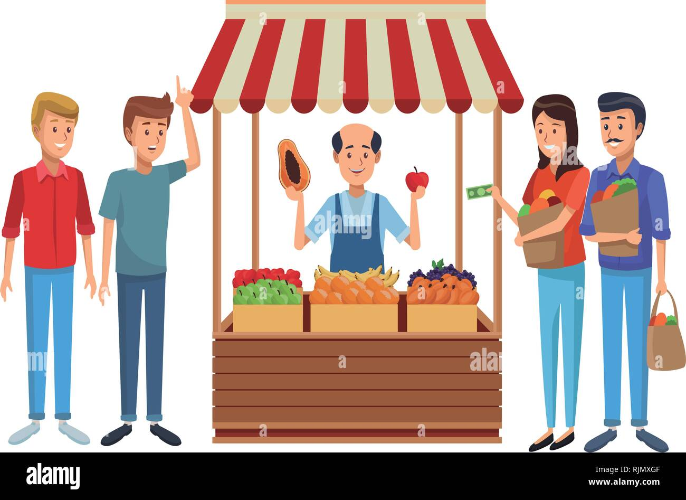

| 🍊 Lesson — Bahaging Ginagampanan ng Pamahalaan sa Regulasyon ng Pamilihan |

Ano ang Regulasyon ng Pamilihan?
Ang regulasyon ng pamilihan ay tumutukoy sa mga patakaran, batas, at hakbang na ipinapatupad ng pamahalaan upang mapanatili ang kaayusan, patas na kompetisyon, at proteksyon ng mamimili at prodyuser. Sa madaling salita, ito ang paraan ng gobyerno para siguraduhin na walang naloloko at patas ang takbo ng kalakalan.
Bakit Kailangan Makialam ang Pamahalaan?
- Para maiwasan ang pananamantala gaya ng sobrang taas ng presyo.
- Upang magkaroon ng patas na kompetisyon at maiwasan ang monopolyo.
- Para protektahan ang mga mamimili laban sa mapanganib o mababang kalidad na produkto.
- Upang matiyak na accessible ang mga pangunahing pangangailangan tulad ng bigas, gamot, at kuryente.
Mga Paraan ng Interbensyon ng Pamahalaan
May iba't ibang paraan ang pamahalaan para kontrolin at gabayan ang takbo ng pamilihan. Ito ay maaaring maging diretso tulad ng pagbabawal o pagpapataw ng presyo, o di kaya'y hindi direktang tulong tulad ng subsidiya at kampanya sa impormasyon.
Price Control: Price Ceiling at Price Floor
- Price Ceiling: Maximum na presyo na puwedeng itakda. Halimbawa: bawal ibenta ang bigas nang lampas sa itinakdang presyo ng DTI para manatiling abot-kaya.
- Price Floor: Minimum na presyo para hindi malugi ang mga prodyuser. Halimbawa: itinatakda ang minimum price ng palay para hindi maloko ang mga magsasaka.
Buwis at Subsidy
- Buwis (Tax): Ipinapataw sa produkto para mabawasan ang sobra-sobrang konsumo o para kumita ang pamahalaan. Halimbawa: sin tax sa alak at sigarilyo.
- Subsidy: Tulong pinansyal mula sa gobyerno para mapababa ang presyo ng produkto o suportahan ang prodyuser. Halimbawa: fertilizer subsidy sa magsasaka.
Pagpapatupad ng Batas at Proteksyon sa Mamimili
Ang pamahalaan ay nagpapatupad ng mga batas katulad ng Consumer Act upang siguruhing tama ang label, presyo, at kalidad ng mga produkto. Maaari ring maghain ng reklamo ang mamimili kung naloko o nakatanggap ng depektibong produkto.
Monitoring at Pagpapanatili ng Katarungan sa Pamilihan
Regular na nagsasagawa ng price monitoring, inspection, at market surveillance ang mga ahensya tulad ng DTI at DA upang bantayan ang presyo at kalidad ng bilihin.
Halimbawa sa Totoong Buhay
- Kapag may bagyo, naglalagay ang gobyerno ng price freeze para hindi magtaas ng presyo ng bigas, tubig, at de lata.
- Ang gobyerno ay nagbibigay ng fuel subsidy sa mga jeepney driver kapag tumataas ang presyo ng gasolina.
- Kapag may nag-overprice sa palengke, puwedeng hulihin o patawan ng multa ng DTI.